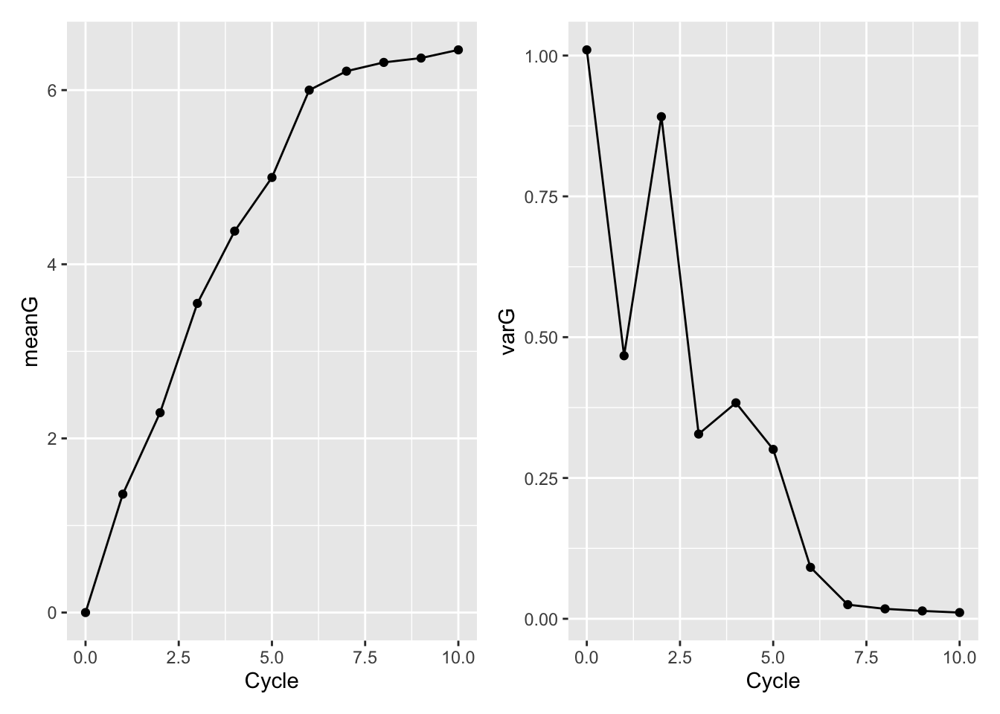

Last updated: 2021-10-24
Checks: 7 0
Knit directory: BreedingSchemeOpt/
This reproducible R Markdown analysis was created with workflowr (version 1.6.2). The Checks tab describes the reproducibility checks that were applied when the results were created. The Past versions tab lists the development history.
Great! Since the R Markdown file has been committed to the Git repository, you know the exact version of the code that produced these results.
Great job! The global environment was empty. Objects defined in the global environment can affect the analysis in your R Markdown file in unknown ways. For reproduciblity it’s best to always run the code in an empty environment.
The command set.seed(20210422) was run prior to running the code in the R Markdown file. Setting a seed ensures that any results that rely on randomness, e.g. subsampling or permutations, are reproducible.
Great job! Recording the operating system, R version, and package versions is critical for reproducibility.
Nice! There were no cached chunks for this analysis, so you can be confident that you successfully produced the results during this run.
Great job! Using relative paths to the files within your workflowr project makes it easier to run your code on other machines.
Great! You are using Git for version control. Tracking code development and connecting the code version to the results is critical for reproducibility.
The results in this page were generated with repository version e0ca345. See the Past versions tab to see a history of the changes made to the R Markdown and HTML files.
Note that you need to be careful to ensure that all relevant files for the analysis have been committed to Git prior to generating the results (you can use wflow_publish or wflow_git_commit). workflowr only checks the R Markdown file, but you know if there are other scripts or data files that it depends on. Below is the status of the Git repository when the results were generated:
Ignored files:
Ignored: .DS_Store
Ignored: .Rhistory
Ignored: .Rproj.user/
Untracked files:
Untracked: analysis/archive/
Untracked: code/runSchemesPostBurnIn_dev.R
Untracked: code/scrap.R
Untracked: data/baselineScheme.gsheet
Untracked: output/Icon
Untracked: output/benchmark_sim.rds
Untracked: output/benchmark_sims5.rds
Untracked: output/burnInSims_bsp1_iita_2021Aug27.rds
Untracked: output/burnInSims_bsp2_iita_2021Aug27.rds
Untracked: output/burnInSims_bsp3_iita_2021Aug27.rds
Untracked: output/burnInSims_iita_2021Aug27.rds
Untracked: output/burnIn_test.rds
Untracked: output/postBurnInGMS_test_DirDom_UCparent.rds
Untracked: output/postBurnInGMS_test_newBSP1.rds
Untracked: output/postBurnInGMS_test_newBSP2.rds
Untracked: output/postBurnInGMS_test_newBSP3.rds
Untracked: output/postBurnInGMS_test_newBSP3_GS.rds
Untracked: output/postBurnInGMS_test_newBSP3_PS.rds
Untracked: output/postBurnInGS_test.rds
Untracked: output/postBurnIn_test.rds
Untracked: output/testSims_GMS_DirDom_MeanTGV_2021Sep18.rds
Untracked: output/testSims_GMS_DirDom_MeanTGV_50parents_2021Sep18.rds
Untracked: output/testSims_GMS_DirDom_UCvariety_2021Sep18.rds
Untracked: output/testSims_GMS_ModelA_MeanBV_2021Sep15.rds
Untracked: output/testSims_GMS_ModelA_MeanBV_2021Sep18.rds
Untracked: output/testSims_GMS_ModelA_UCparent_propSelpt05_2021Sep18.rds
Untracked: output/test_burnInSims_2021Sep17.rds
Untracked: output/test_burnInSims_GS_2021Sep17.rds
Untracked: output/test_burnInSims_GS_noAYT_2021Sep17.rds
Untracked: output/test_burnInSims_PS_2021Sep17.rds
Untracked: output/test_burnInSims_PS_noAYT_2021Sep17.rds
Untracked: output/test_burnIn_sim.rds
Untracked: output/test_inputs_for_mmer.Rdata
Unstaged changes:
Modified: analysis/AlphaSimHlpR_firstSteps.Rmd
Modified: analysis/baselineSim.Rmd
Modified: analysis/genomicMateSelSims.Rmd
Note that any generated files, e.g. HTML, png, CSS, etc., are not included in this status report because it is ok for generated content to have uncommitted changes.
These are the previous versions of the repository in which changes were made to the R Markdown (analysis/AlphaSimR_demo.Rmd) and HTML (docs/AlphaSimR_demo.html) files. If you’ve configured a remote Git repository (see ?wflow_git_remote), click on the hyperlinks in the table below to view the files as they were in that past version.
| File | Version | Author | Date | Message |
|---|---|---|---|---|
| Rmd | e0ca345 | wolfemd | 2021-10-24 | Add a basic demo of AlphaSimR |
First steps with AlphaSimR breeding scheme simulation. No “help” from AlphaSimHlpR.
Example(s) below.
See also:
In the EiB example, they do in fact simulate checks and check plots and a multi-stage variety testing pipeline.
Below, I want to show how AlphaSimR works (as far as I can myself understand) and in a simple, bare bones way.
You can build as much complexity on top of that into your simulation as you want if you understand how it stores and manipulates phenotypic, genotypic and related information.
library(AlphaSimR); suppressMessages(library(tidyverse))
founderHap <- runMacs2(nInd=100,
nChr=2, segSites=100,
Ne=20)
# New global simulation parameters from founder haplotypes
SP <- SimParam$new(founderHap)
SP$restrSegSites(minQtlPerChr=1, minSnpPerChr=10, overlap=FALSE)
# Additive trait genetic architecture
## the mean and variance correspond to the genetic mean and additive gen. var.
## of any founder population created from the `founderHap`
SP$addTraitA(nQtlPerChr = 3, mean = 0, var = 1)
SP$setSexes("no") #all individuals are hermaphrodites
SP$addSnpChip(nSnpPerChr = 10) # Observed SNPs per chromosome
# Next two seem probably useful, but are not required
SP$setTrackPed(TRUE) #keeps pedigree information in slot SP@pedigree
SP$setTrackRec(TRUE) #keeps recomb. records of all individuals in slot of "SP"
founders <- newPop(founderHap, simParam=SP)At this point, we have a “population” or pop-object founders
Contains 100 individuals, each created from the genome/haplotypes simulated by runMacs2.
foundersAn object of class "Pop"
Ploidy: 2
Individuals: 100
Chromosomes: 2
Loci: 200
Traits: 1 str(founders,max.level = 2)Formal class 'Pop' [package "AlphaSimR"] with 18 slots
..@ id : chr [1:100] "1" "2" "3" "4" ...
..@ iid : int [1:100] 1 2 3 4 5 6 7 8 9 10 ...
..@ mother : chr [1:100] "0" "0" "0" "0" ...
..@ father : chr [1:100] "0" "0" "0" "0" ...
..@ sex : chr [1:100] "H" "H" "H" "H" ...
..@ nTraits: int 1
..@ gv : num [1:100, 1] -1.766 -0.376 -0.376 -0.376 -0.376 ...
..@ pheno : num [1:100, 1] NA NA NA NA NA NA NA NA NA NA ...
..@ ebv : num[1:100, 0 ]
..@ gxe :List of 1
..@ fixEff : int [1:100] 1 1 1 1 1 1 1 1 1 1 ...
..@ reps : num [1:100] 1 1 1 1 1 1 1 1 1 1 ...
..@ misc :List of 100
..@ nInd : int 100
..@ nChr : int 2
..@ ploidy : int 2
..@ nLoci : int [1:2] 100 100
..@ geno :List of 2
.. ..- attr(*, "dim")= int [1:2] 2 1If you run e.g. SP$setVarE(), you can register a universal / default level of h2, H2 and error variance that will add ‘default’ phenotypic values into the @pheno slot of any pop-object you create (intial founders and subsequent progeny).
Doing that is convenient if you want to keep your simulation simple and not worry about simulating field trials.
However, we will often want more complexity. We want to simulate a series of variety testing trials / training population phenotyping trials. Those trials might take place across multiple years and locations. The years and locations may have different error-variance and replication number, both of which will impact the effective heritability, prediction/selection accuracy, etc.
You can set up a “field trial” using the setPheno() function. Recommend examining the AlphaSimR manual’s entry for setPheno().
Let’s run a field trial on the founder population and then phenotypically select the best to make some crosses.
# sim a narrow-sense h2 of 0.5 and 2 reps
founders <- setPheno(pop = founders, h2 = 0.5, reps = 2)This added a slot founders@pheno
founders@pheno %>% str num [1:100, 1] -0.691 0.31 0.278 0.244 1.257 ...Also added founders@reps.
founders@reps %>% str num [1:100] 2 2 2 2 2 2 2 2 2 2 ...Important: Using the setPheno(reps = ) argument produces the equivalent of entry-means (aggregated phenotypes) in the @pheno slot.
It may be useful (crucial?) to store information on which individuals have been observed in which trials, with what replication number. For example, if you simulate many trials with varying design / connectivity, and want to aggregate those data to get BLUPs or GEBVS for selection, then replication numbers from individual trials would be appropriate as weights for each observation in the downstream analysis.
Note: You might just want to use setPheno(onlyPheno=T) to generate a matrix of phenotype values, instead of an actual pop-class object which takes considerably more memory.
setPheno(pop = founders, h2 = 0.5, reps = 2, onlyPheno = T) %>% str num [1:100, 1] -1.597 -0.435 0.72 -0.667 -1.434 ...Or create your own convenient storage container for phenotypes and other outputs
# Example
tibble(ID=founders@id,
pheno=founders@pheno,
reps=founders@reps) %>% head# A tibble: 6 × 3
ID pheno[,1] reps
<chr> <dbl> <dbl>
1 1 -0.691 2
2 2 0.310 2
3 3 0.278 2
4 4 0.244 2
5 5 1.26 2
6 6 0.817 2Now we’ve simulated an initial field trial on our founder population.
Let’s make some selections and crosses.
The selection criteria in our case is just founders@pheno.
selectInd() is a convenience / helper function.
chosenParents<- selectInd(pop=founders, nInd=5, use = "pheno")
chosenParentsAn object of class "Pop"
Ploidy: 2
Individuals: 5
Chromosomes: 2
Loci: 200
Traits: 1 Output is a pop-class object with the chosen individuals.
chosenParents@id[1] "66" "100" "91" "48" "24" Just to show, we can write our own code to choose the individuals.
chosenParents<-tibble(id=founders@id,
pheno=founders@pheno) %>%
arrange(desc(pheno)) %>%
slice(1:5)
chosenParents# A tibble: 5 × 2
id pheno[,1]
<chr> <dbl>
1 66 2.54
2 100 2.09
3 91 1.98
4 48 1.88
5 24 1.83And manually subset the founders population.
chosenParents<-founders[chosenParents$id]
chosenParentsAn object of class "Pop"
Ploidy: 2
Individuals: 5
Chromosomes: 2
Loci: 200
Traits: 1 Now we can make crosses. There are several functions in AlphaSimR to set up crosses, from individual crosses, specific mating plans, even open-pollination. randCross is pretty convenient and does what it sounds like it does, randomly makes a specified number of progeny / crosses among a specified set of parents.
offspringPop<-randCross(pop=chosenParents, nCrosses=10, nProgeny = 10)
offspringPopAn object of class "Pop"
Ploidy: 2
Individuals: 100
Chromosomes: 2
Loci: 200
Traits: 1 str(offspringPop,max.level = 2)Formal class 'Pop' [package "AlphaSimR"] with 18 slots
..@ id : chr [1:100] "101" "102" "103" "104" ...
..@ iid : int [1:100] 101 102 103 104 105 106 107 108 109 110 ...
..@ mother : chr [1:100] "66" "66" "66" "66" ...
..@ father : chr [1:100] "100" "100" "100" "100" ...
..@ sex : chr [1:100] "H" "H" "H" "H" ...
..@ nTraits: int 1
..@ gv : num [1:100, 1] 1.278 0.792 2.946 1.278 1.278 ...
..@ pheno : num [1:100, 1] NA NA NA NA NA NA NA NA NA NA ...
..@ ebv : num[1:100, 0 ]
..@ gxe :List of 1
..@ fixEff : int [1:100] 1 1 1 1 1 1 1 1 1 1 ...
..@ reps : num [1:100] 1 1 1 1 1 1 1 1 1 1 ...
..@ misc :List of 100
..@ nInd : int 100
..@ nChr : int 2
..@ ploidy : int 2
..@ nLoci : int [1:2] 100 100
..@ geno :List of 2
.. ..- attr(*, "dim")= int [1:2] 2 1Now we have three pop-class objects, founders, chosenParents and offspringPop.
When we made the crosses, the pedigree at SP$pedigree was updated automatically, thus keeping records of the connection between founders and offspringPop.
SP$pedigree %>% str int [1:200, 1:3] 0 0 0 0 0 0 0 0 0 0 ...
- attr(*, "dimnames")=List of 2
..$ : chr [1:200] "1" "2" "3" "4" ...
..$ : chr [1:3] "mother" "father" "isDH"Might not want / need to keep the chosenParents object since it’s information is identical to the entries for those parents in the founders object.
This should emphasize how flexible things are.
We can proceed with separate objects for the founders and subsequent populations, OR combine them, like so:
breedingPop<-c(founders,offspringPop)
breedingPopAn object of class "Pop"
Ploidy: 2
Individuals: 200
Chromosomes: 2
Loci: 200
Traits: 1 Put it on a loop now.
rm(list=ls())
# SET-UP FOUNDER POPULATION
founderHap <- runMacs2(nInd=100,
nChr=2, segSites=100,
Ne=50)
# New global simulation parameters from founder haplotypes
SP <- SimParam$new(founderHap)
SP$restrSegSites(minQtlPerChr=10, minSnpPerChr=10, overlap=FALSE)
SP$addTraitA(nQtlPerChr = 10, mean = 0, var = 1) # Additive trait genetic architecture
SP$setSexes("no") #all individuals are hermaphrodites
SP$addSnpChip(nSnpPerChr = 10) # Observed SNPs per chromosome
SP$setTrackPed(TRUE) #keeps pedigree information in slot SP@pedigree
SP$setTrackRec(TRUE) #keeps recomb. records of all individuals in slot of "SP"
# New founder pop
founders <- newPop(founderHap, simParam=SP)
# Initial founder phenotypes
founders <- setPheno(pop = founders, h2 = 0.5, reps = 2)# loop length / number of cycles of selection
nCycles<-10
# very simple container for each cycles sim output
simOutput<-list(founders)
cycle<-1
for(cycle in 1:nCycles){
cat(paste0(" C",cycle))
# choose the best from last cycle
chosenParents<- selectInd(pop=simOutput[[cycle]], nInd=5, use = "pheno")
# make crosses
offspringPop<-randCross(pop=chosenParents,
nCrosses=10, nProgeny = 10)
# phenotype new offspring
offspringPop<-setPheno(pop = offspringPop, h2 = 0.5, reps = 2)
# add new offspring to simOutput list
simOutput[[cycle+1]]<-offspringPop
} C1 C2 C3 C4 C5 C6 C7 C8 C9 C10Tidy up the simulation output.
Compute the mean and variance in the genetic value for each cycle / generation.
Since it’s a sim. I can use the @gv slot which corresponds to the true genetic value of each line.
tidySimOutput<-tibble(Cycle=0:nCycles,
Sims=simOutput) %>%
mutate(meanG=map_dbl(Sims,~mean(.@gv)),
varG=map_dbl(Sims,~var(.@gv)))
tidySimOutput# A tibble: 11 × 4
Cycle Sims meanG varG
<int> <list> <dbl> <dbl>
1 0 <Pop> 1.50e-16 1.01
2 1 <Pop> 1.36e+ 0 0.467
3 2 <Pop> 2.30e+ 0 0.891
4 3 <Pop> 3.55e+ 0 0.328
5 4 <Pop> 4.38e+ 0 0.383
6 5 <Pop> 5.00e+ 0 0.301
7 6 <Pop> 6.00e+ 0 0.0913
8 7 <Pop> 6.22e+ 0 0.0251
9 8 <Pop> 6.32e+ 0 0.0176
10 9 <Pop> 6.37e+ 0 0.0139
11 10 <Pop> 6.46e+ 0 0.0111library(patchwork)
meanGplot<-ggplot(tidySimOutput,aes(x=Cycle,y=meanG)) + geom_point() + geom_line()
varGplot<-ggplot(tidySimOutput,aes(x=Cycle,y=varG)) + geom_point() + geom_line()
meanGplot | varGplot
(Some useful features).
furrrFor now, see this script which contains an example, but it might be over complicated / difficult to understand.
Recommend looking into purrr for better, tidier iteration and furrr or other options for parallel processing.
Lot’s of ways to do this. Show how to plot meanG and varG over time, across multiple replications of a simulation scenario.
The way I plot things here might be helpful as an example.
sessionInfo()R version 4.1.1 (2021-08-10)
Platform: x86_64-apple-darwin17.0 (64-bit)
Running under: macOS Big Sur 10.16
Matrix products: default
BLAS: /Library/Frameworks/R.framework/Versions/4.1/Resources/lib/libRblas.0.dylib
LAPACK: /Library/Frameworks/R.framework/Versions/4.1/Resources/lib/libRlapack.dylib
locale:
[1] en_US.UTF-8/en_US.UTF-8/en_US.UTF-8/C/en_US.UTF-8/en_US.UTF-8
attached base packages:
[1] stats graphics grDevices utils datasets methods base
other attached packages:
[1] patchwork_1.1.1 forcats_0.5.1 stringr_1.4.0 dplyr_1.0.7
[5] purrr_0.3.4 readr_2.0.1 tidyr_1.1.3 tibble_3.1.4
[9] ggplot2_3.3.5 tidyverse_1.3.1 AlphaSimR_1.0.4 R6_2.5.1
[13] workflowr_1.6.2
loaded via a namespace (and not attached):
[1] Rcpp_1.0.7 lubridate_1.7.10 assertthat_0.2.1 rprojroot_2.0.2
[5] digest_0.6.27 utf8_1.2.2 cellranger_1.1.0 backports_1.2.1
[9] reprex_2.0.1 evaluate_0.14 highr_0.9 httr_1.4.2
[13] pillar_1.6.2 rlang_0.4.11 readxl_1.3.1 rstudioapi_0.13
[17] whisker_0.4 jquerylib_0.1.4 rmarkdown_2.11 labeling_0.4.2
[21] munsell_0.5.0 broom_0.7.9 compiler_4.1.1 httpuv_1.6.3
[25] modelr_0.1.8 xfun_0.26 pkgconfig_2.0.3 htmltools_0.5.2
[29] tidyselect_1.1.1 fansi_0.5.0 crayon_1.4.1 tzdb_0.1.2
[33] dbplyr_2.1.1 withr_2.4.2 later_1.3.0 grid_4.1.1
[37] jsonlite_1.7.2 gtable_0.3.0 lifecycle_1.0.0 DBI_1.1.1
[41] git2r_0.28.0 magrittr_2.0.1 scales_1.1.1 cli_3.0.1
[45] stringi_1.7.4 farver_2.1.0 fs_1.5.0 promises_1.2.0.1
[49] xml2_1.3.2 bslib_0.3.0 ellipsis_0.3.2 generics_0.1.0
[53] vctrs_0.3.8 tools_4.1.1 glue_1.4.2 hms_1.1.0
[57] fastmap_1.1.0 yaml_2.2.1 colorspace_2.0-2 rvest_1.0.1
[61] knitr_1.34 haven_2.4.3 sass_0.4.0